Here, we’ll walk through some problems that are hard/impossible to diagnose with SBC. As usual the focus is on problems with models, assuming our inference algorithm is correct. But for each of those problems, one can imagine a corresponding failure in an algorithm — although some of those failures are quite unlikely for actual algorithms.
library(SBC)
library(ggplot2)
use_cmdstanr <- getOption("SBC.vignettes_cmdstanr", TRUE) # Set to false to use rstan instead
if(use_cmdstanr) {
library(cmdstanr)
} else {
library(rstan)
rstan_options(auto_write = TRUE)
}
options(mc.cores = parallel::detectCores())
library(future)
plan(multisession)
# The fits are very fast,
# so we force a minimum chunk size to reduce overhead of
# paralellization and decrease computation time.
options(SBC.min_chunk_size = 5)
# Setup caching of results
if(use_cmdstanr) {
cache_dir <- "./_limits_SBC_cache"
} else {
cache_dir <- "./_limits_rstan_SBC_cache"
}
if(!dir.exists(cache_dir)) {
dir.create(cache_dir)
}SBC and minor changes to model
SBC requires a lot of iterations to discover problems (either with model or the algorithm) that are subtle.
To demonstrate this, we will fit a simple model with a normal likelihood, but use Student’s t distribution with 5 degrees of freedom to generate the data.
To see the difference we’ll show the two densities
x <- seq(-5, 5, length.out = 100)
dens_data <- rbind(
data.frame(x = x, density = dnorm(x, log = FALSE),
log_density = dnorm(x, log = TRUE), type = "normal()"),
data.frame(x = x, density = dt(x, df = 5, log = FALSE),
log_density = dt(x, df = 5, log = TRUE), type = "t(5)"))
ggplot(dens_data, aes(x = x, y = density, color = type)) +
geom_line(size = 2)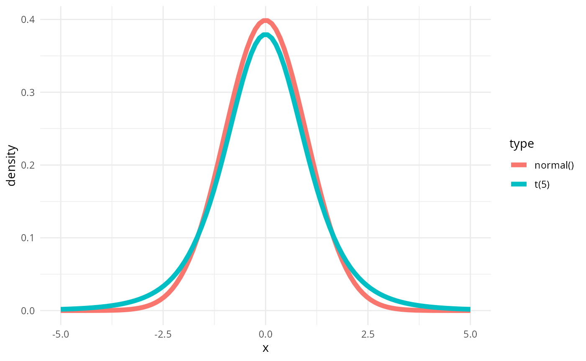
As expected the t distribution has fatter tails, which is even better visible when looking at the logarithm of the density.
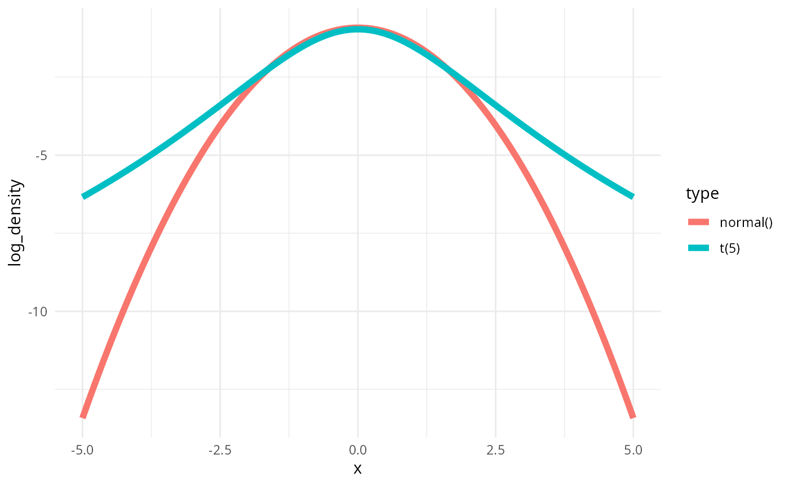
Here is our Stan code for the simple normal model.
data {
int<lower=0> N;
vector[N] y;
}
parameters {
real mu;
real<lower=0> sigma;
}
model {
target += normal_lpdf(mu | 0, 1);
target += normal_lpdf(sigma | 0, 1);
target += normal_lpdf(y | mu, sigma);
}
iter_warmup <- 300
iter_sampling <- 1000
if(use_cmdstanr) {
model_minor <- cmdstan_model("stan/minor_discrepancy.stan")
backend_minor <- SBC_backend_cmdstan_sample(
model_minor, iter_warmup = iter_warmup, iter_sampling = iter_sampling, chains = 1)
} else {
model_minor <- stan_model("stan/minor_discrepancy.stan")
backend_minor <- SBC_backend_rstan_sample(
model_minor, iter = iter_sampling + iter_warmup, warmup = iter_warmup, chains = 1)
}And here we simulate from a student’s t distribution. We scale the distribution so that sigma is the standard deviation of the distribution.
single_sim_minor <- function(N) {
mu <- rnorm(n = 1, mean = 0, sd = 1)
sigma <- abs(rnorm(n = 1, mean = 0, sd = 1))
nu <- 5
student_scale <- sigma / sqrt(nu / (nu - 2))
y <- mu + student_scale * rt(N, df = nu)
list(
variables = list(mu = mu, sigma = sigma),
generated = list(N = N, y = y)
)
}
set.seed(51336848)
generator_minor <- SBC_generator_function(single_sim_minor, N = 10)
datasets_minor <- generate_datasets(generator_minor, n_sims = 200)Can we see something by looking at the results of just the first 10 simulations? (note that SBC_datasets objects support subsetting).
results_minor_10 <- compute_SBC(datasets_minor[1:10], backend_minor,
cache_mode = "results",
cache_location = file.path(cache_dir, "minor_10"))## Results loaded from cache file 'minor_10'## - 1 (10%) fits had at least one Rhat > 1.01. Largest Rhat was 1.024.## - 3 (30%) fits had some steps rejected. Maximum number of rejections was 2.## Not all diagnostics are OK.
## You can learn more by inspecting $default_diagnostics, $backend_diagnostics
## and/or investigating $outputs/$messages/$warnings for detailed output from the backend.Not really…
plot_rank_hist(results_minor_10)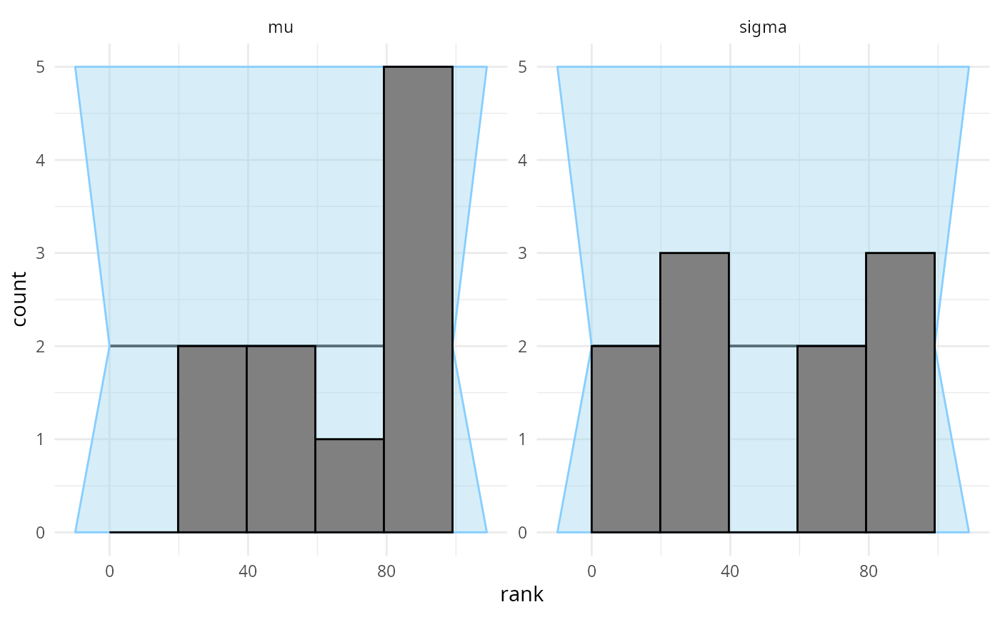
plot_ecdf_diff(results_minor_10)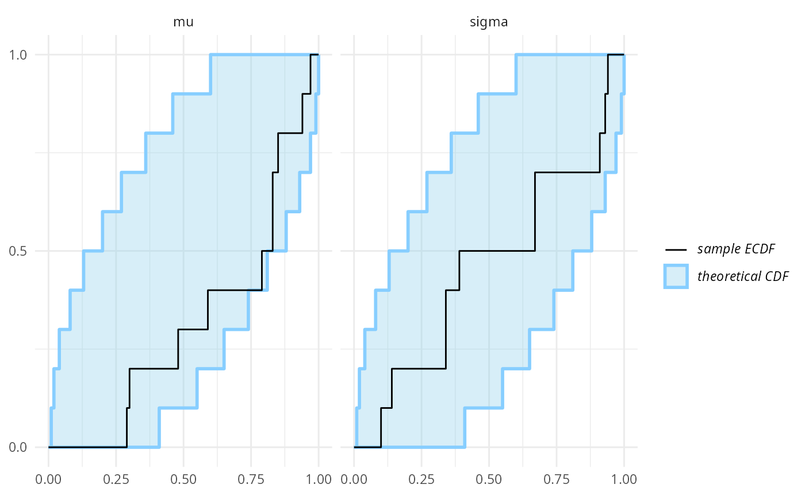
Will we have better luck with 100 simulations? (Note that we can use bind_results to combine multiple results, letting us start small, but not throw away the computation spent for the initial simulations)
results_minor_100 <- bind_results(
results_minor_10,
compute_SBC(datasets_minor[11:100], backend_minor,
cache_mode = "results",
cache_location = file.path(cache_dir, "minor_90"))
)## Results loaded from cache file 'minor_90'## - 6 (7%) fits had at least one Rhat > 1.01. Largest Rhat was 1.02.## - 17 (19%) fits had some steps rejected. Maximum number of rejections was 2.## Not all diagnostics are OK.
## You can learn more by inspecting $default_diagnostics, $backend_diagnostics
## and/or investigating $outputs/$messages/$warnings for detailed output from the backend.Here we see something suspicios with the sigma variable, but it is not very convincing.
plot_rank_hist(results_minor_100)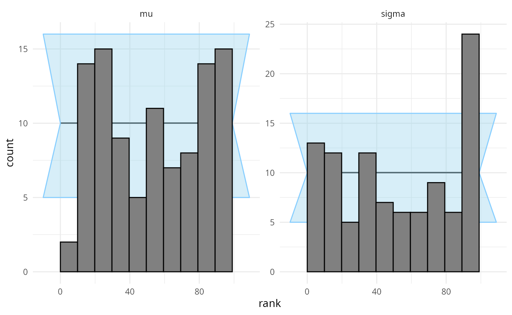
plot_ecdf_diff(results_minor_100)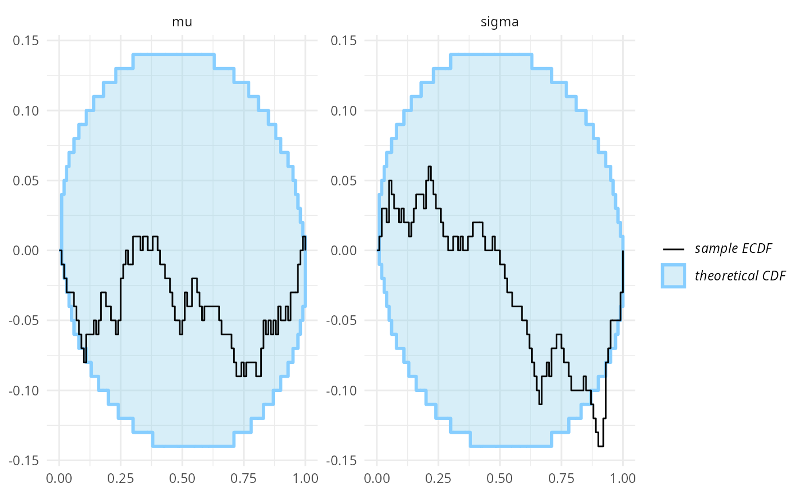
So let’s do additional 100 SBC steps
results_minor_200 <- bind_results(
results_minor_100,
compute_SBC(datasets_minor[101:200], backend_minor,
cache_mode = "results",
cache_location = file.path(cache_dir, "minor_next_100"))
)## Results loaded from cache file 'minor_next_100'## - 8 (8%) fits had at least one Rhat > 1.01. Largest Rhat was 1.019.## - 15 (15%) fits had some steps rejected. Maximum number of rejections was 2.## Not all diagnostics are OK.
## You can learn more by inspecting $default_diagnostics, $backend_diagnostics
## and/or investigating $outputs/$messages/$warnings for detailed output from the backend.OK, so this looks at least a bit conclusive, but still, the violation of uniformity is not very big.
plot_rank_hist(results_minor_200)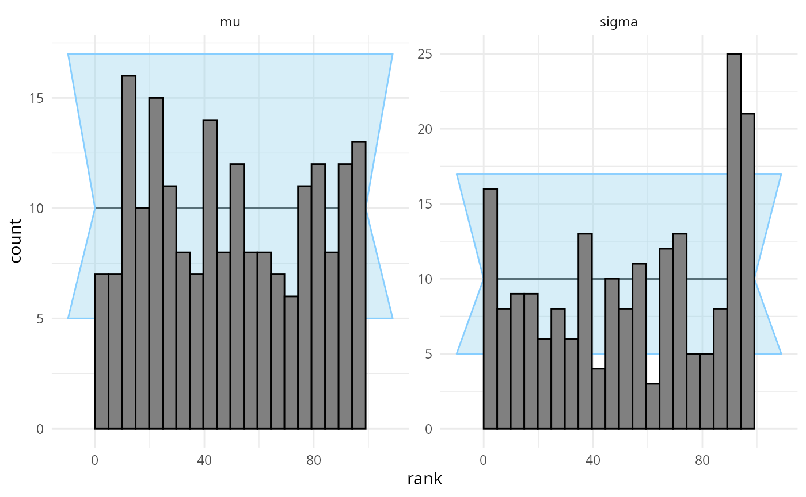
plot_ecdf_diff(results_minor_200)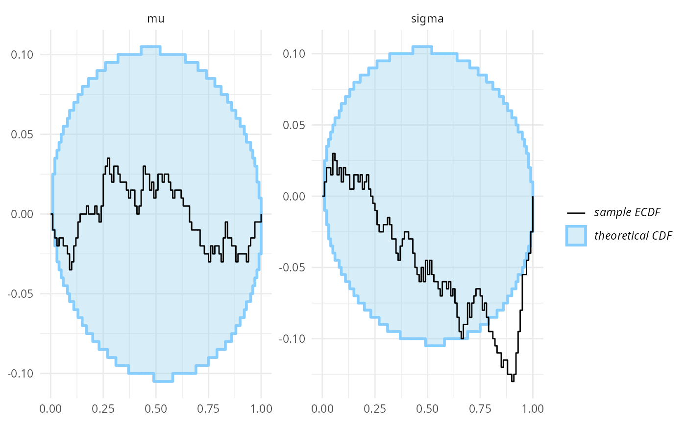
If we used more data points per simulation (here we simulated just 10), the problem would likely show faster. In any case, we need a relatively large number of runs to identify small discrepancies with high probability.
But it is also the case that the estimates are not completely meaningless (as the distributions are quite close). One way to look into this is to plot the posterior mean + central 90% interval against the simulated value via plot_sim_estimated. The estimates should cluster around the y=x line (blue), which they mostly do.
plot_sim_estimated(results_minor_200, alpha = 0.5)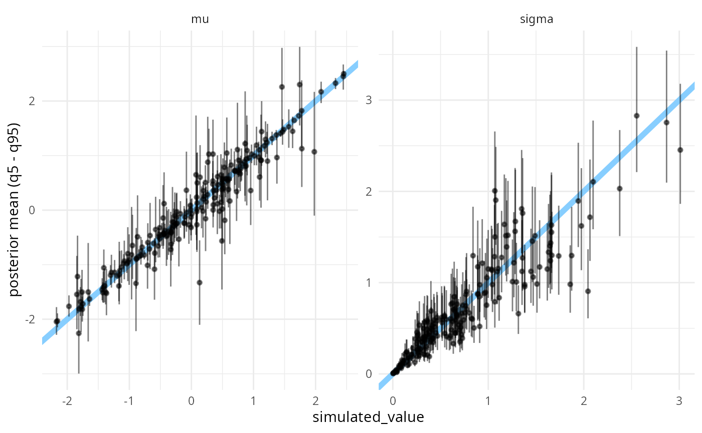
Another way to investigate this is the coverage plot, showing the attained coverage of various central credible intervals.
plot_coverage(results_minor_200)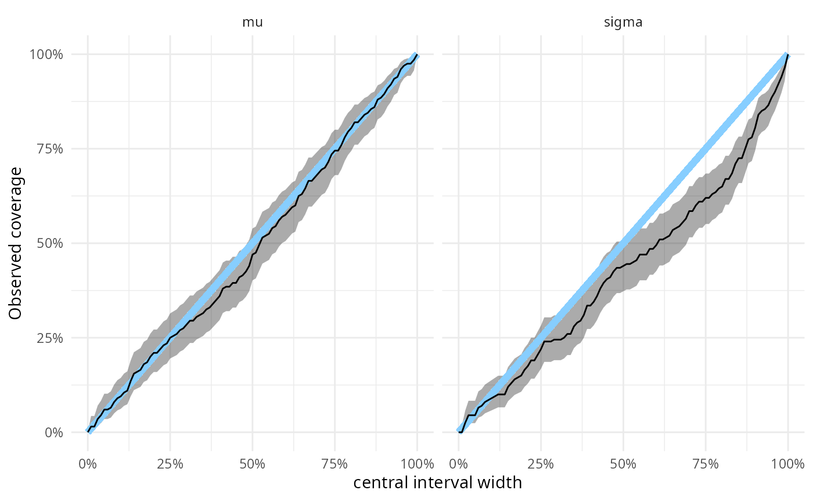
Or we can even directly inspect some intervals of interest:
coverage <- empirical_coverage(results_minor_200$stats, width = c(0.5,0.9,0.95))
coverage## # A tibble: 6 x 6
## variable width width_represented ci_low estimate ci_high
## <chr> <dbl> <dbl> <dbl> <dbl> <dbl>
## 1 mu 0.5 0.5 0.407 0.475 0.544
## 2 mu 0.9 0.9 0.845 0.895 0.930
## 3 mu 0.95 0.95 0.936 0.97 0.986
## 4 sigma 0.5 0.5 0.363 0.43 0.499
## 5 sigma 0.9 0.9 0.734 0.795 0.845
## 6 sigma 0.95 0.95 0.845 0.895 0.930
sigma_90_coverage_string <- paste0(round(100 * as.numeric(
coverage[coverage$variable == "sigma" & coverage$width == 0.9, c("ci_low","ci_high")])),
"%",
collapse = " - ")where we see that for example for the 90% central credible interval of sigma we would expect the actual coverage to be 73% - 85%.
Prior mismatch
Especially when those affect only prior as SBC is based on fitted posterior - so if prior does not influence posterior very much…
TODO
Missing likelihood
SBC will not notice if you completely omit likelihood from your Stan model!
Here we have a generator for a very simple model with gaussian likelihood:
single_sim_missing <- function(N) {
mu <- rnorm(n = 1, mean = 0, sd = 1)
y <- rnorm(n = N, mean = mu, sd = 1)
list(
variables = list(mu = mu),
generated = list(N = N, y = y)
)
}
set.seed(25746223)
generator_missing <- SBC_generator_function(single_sim_missing, N = 10)
datasets_missing <- generate_datasets(generator_missing, n_sims = 200)And here is a model that just completely ignores the data, but has the right prior:
data {
int<lower=0> N;
vector[N] y;
}
parameters {
real mu;
}
model {
target += normal_lpdf(mu | 0, 1);
}
iter_warmup <- 300
iter_sampling <- 1000
if(use_cmdstanr) {
model_missing <- cmdstan_model("stan/missing_likelihood.stan")
backend_missing <- SBC_backend_cmdstan_sample(
model_missing, iter_warmup = iter_warmup, iter_sampling = iter_sampling, chains = 1)
} else {
model_missing <- stan_model("stan/missing_likelihood.stan")
backend_missing <- SBC_backend_rstan_sample(
model_missing, iter = iter_sampling + iter_warmup, warmup = iter_warmup, chains = 1)
}Now we’ll compute the results for 200 simulations:
results_missing <- compute_SBC(datasets_missing, backend_missing,
cache_mode = "results",
cache_location = file.path(cache_dir, "missing"))## Results loaded from cache file 'missing'## - 15 (8%) fits had at least one Rhat > 1.01. Largest Rhat was 1.027.## Not all diagnostics are OK.
## You can learn more by inspecting $default_diagnostics, $backend_diagnostics
## and/or investigating $outputs/$messages/$warnings for detailed output from the backend.And here are our rank plots:
plot_rank_hist(results_missing)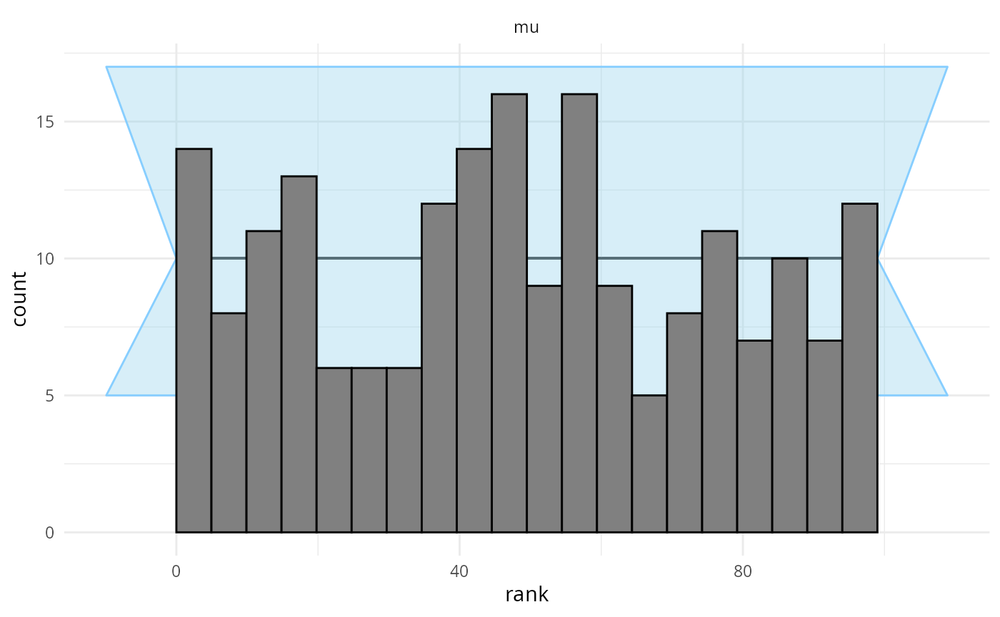
plot_ecdf_diff(results_missing)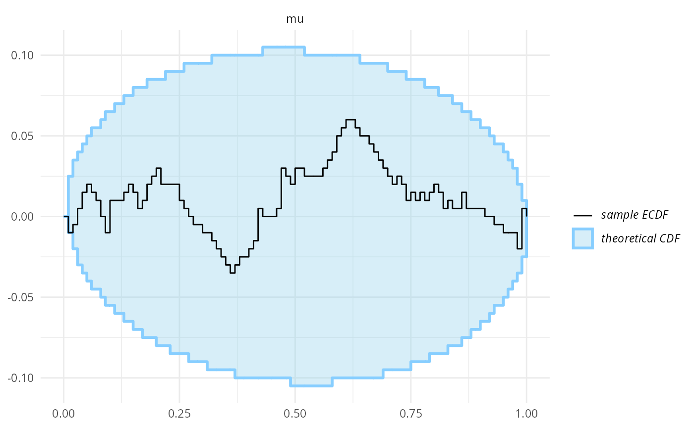
It’s just nothing out of the ordinary.
But we are not completely helpless: This specific type of problem can be noticed by prior/posterior contraction plot. In this plot we compare the prior and posterior standard deviation to get a measure of how much more we know about the variable after fitting the model. For this model, we can get the prior sd directly, but one can also use a (preferably large) SBC_datasets object to estimate it empirically for more complex models.
prior_sd <- c("mu" = 1)
#prior_sd <- calculate_prior_sd(generate_datasets(generator_missing, 1000))
plot_contraction(results_missing, prior_sd)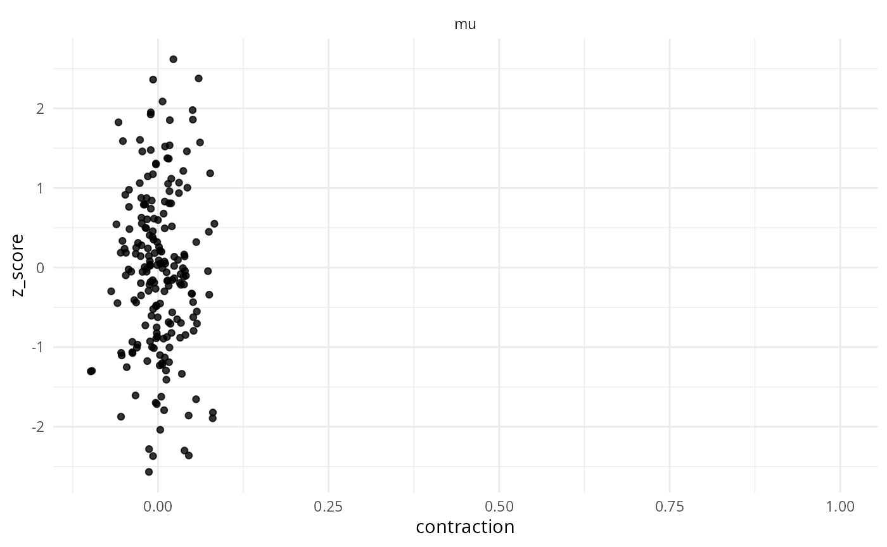
We see that the contraction centers around 0 (no contraction) with some deviation (as expected due to stochasticity of the estimate), which means that the model learns nothing useful on average about mu.
Another plot that can show a similar problem is the plot_sim_estimated showing that the posterior credible intervals don’t really change with changes to simulated_value.
plot_sim_estimated(results_missing, alpha = 0.5)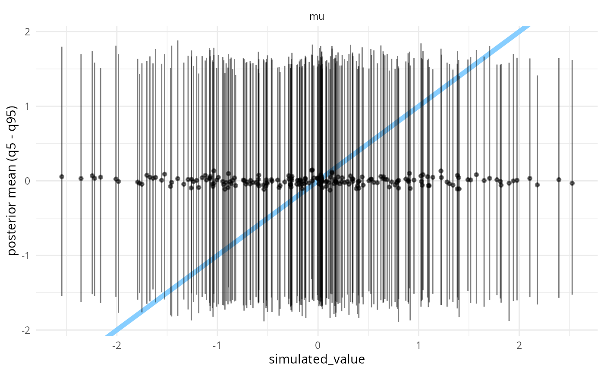
There is however even more powerful method - and that is to include the likelihood in the SBC. This is most easily done by adding a “generated quantity” to the SBC results - this is a function that is evaluated within the context of the variables AND data. And it can be added without recomputing the fits!
normal_lpdf <- function(y, mu, sigma) {
sum(dnorm(y, mean = mu, sd = sigma, log = TRUE))
}
log_lik_gq <- generated_quantities(log_lik = normal_lpdf(y, mu, 1),
.globals = "normal_lpdf" )
results_missing_gq <- recompute_SBC_statistics(
results_missing, datasets_missing,
backend = backend_missing, gen_quants = log_lik_gq)## - 19 (10%) fits had at least one Rhat > 1.01. Largest Rhat was 1.027.## Not all diagnostics are OK.
## You can learn more by inspecting $default_diagnostics, $backend_diagnostics
## and/or investigating $outputs/$messages/$warnings for detailed output from the backend.The rank plots for the log_lik quantity immediately shows a severe problem:
plot_ecdf_diff(results_missing_gq)
plot_rank_hist(results_missing_gq)
Partially missing likelihood
A more complicated case is when the likelihood is only slightly wrong (and missing something) - e.g. due to an indexing error. Turns out missing just one data point needs a lot of simulations to see, so we’ll write a model that ignores a full half of the data points.
data {
int<lower=0> N;
vector[N] y;
}
transformed data {
int N2 = N %/% 2 + 1;
}
parameters {
real mu;
}
model {
target += normal_lpdf(mu | 0, 1);
for(n in 1:N2) {
target += normal_lpdf(y[n] | mu, 1);
}
}
if(use_cmdstanr) {
model_missing_2 <- cmdstan_model("stan/partially_missing_likelihood.stan")
backend_missing_2 <- SBC_backend_cmdstan_sample(
model_missing_2, iter_warmup = iter_warmup, iter_sampling = iter_sampling, chains = 1)
} else {
model_missing_2 <- stan_model("stan/partially_missing_likelihood.stan")
backend_missing_2 <- SBC_backend_rstan_sample(
model_missing_2, iter = iter_sampling + iter_warmup, warmup = iter_warmup, chains = 1)
}Let us use this model for the same set of simulations.
results_missing_2 <- compute_SBC(datasets_missing, backend_missing_2, gen_quants = log_lik_gq,
cache_mode = "results",
cache_location = file.path(cache_dir, "missing_2"))## Results loaded from cache file 'missing_2'## - 21 (10%) fits had at least one Rhat > 1.01. Largest Rhat was 1.031.## Not all diagnostics are OK.
## You can learn more by inspecting $default_diagnostics, $backend_diagnostics
## and/or investigating $outputs/$messages/$warnings for detailed output from the backend.The contraction plot would not show anything suspicious - we get decent contraction
plot_contraction(results_missing_2, prior_sd, variables = "mu")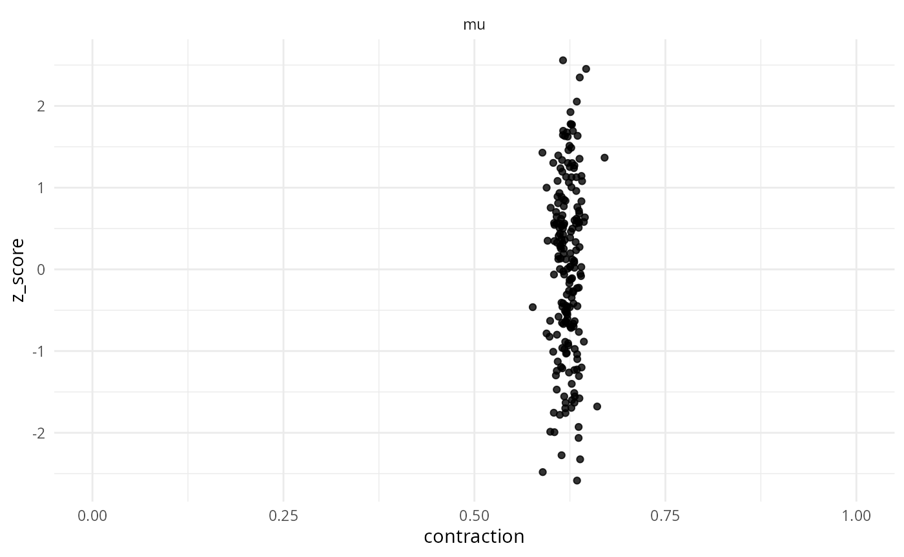
Similarly, our posterior estimates now cluster around the true values.
plot_sim_estimated(results_missing_2, variables = "mu", alpha = 0.5)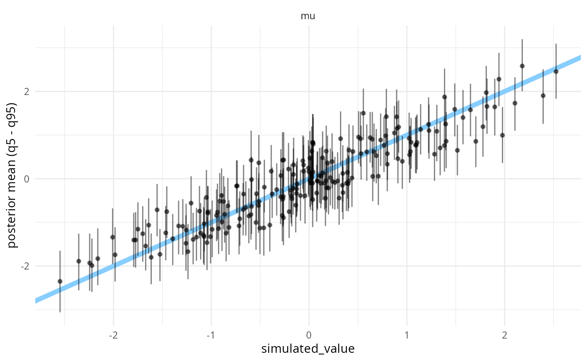
Now contraction is pretty high, and mu is behaving well, but our log_lik generated quantity shows a clear problem
plot_ecdf_diff(results_missing_2)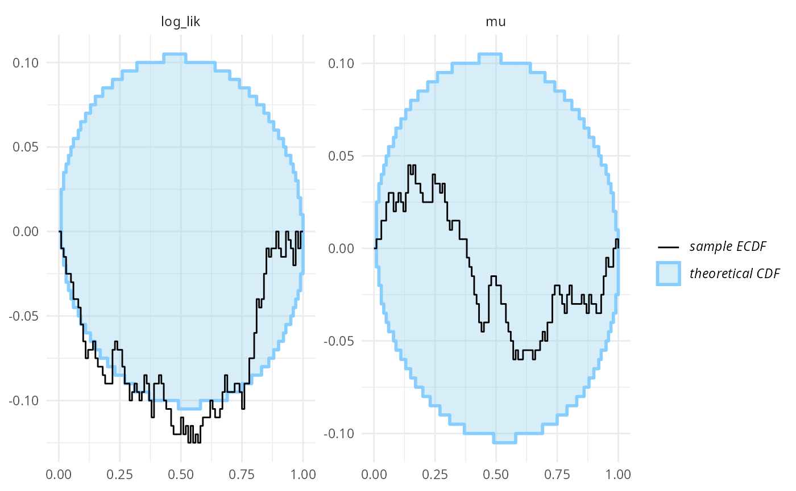
plot_rank_hist(results_missing_2)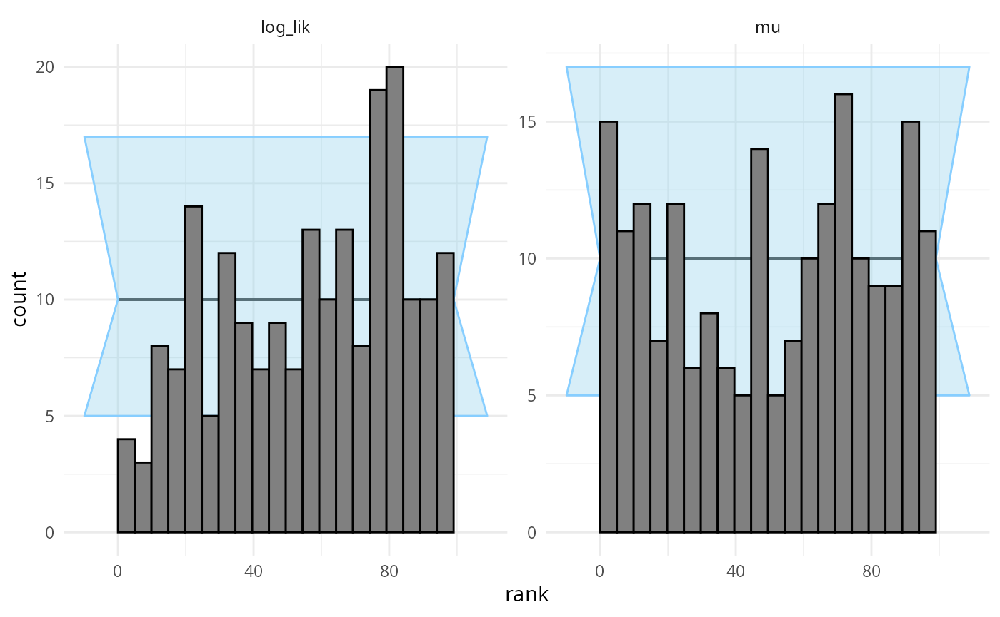
We could definitely find even smaller deviations than omitting half the data points, that would however require more simulations for the SBC. This boils down to the earlier discussion on small changes to the model - omitting a few data points does not change the posterior very much in this case (as the model is simple and is already quite well informed by just a few data points) and thus it is harder to detect this problem by SBC - but it is possible.